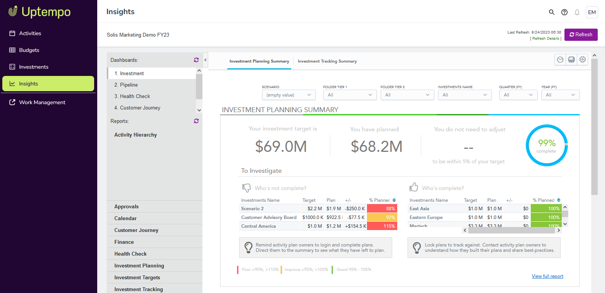

Insights section
The  Insights section contains dashboards and reports that are populated by entering your investments, PO’s and actuals and shows the current status of your marketing spend for all investments. You can leverage this powerful BI application directly within the
Insights section contains dashboards and reports that are populated by entering your investments, PO’s and actuals and shows the current status of your marketing spend for all investments. You can leverage this powerful BI application directly within the  Insights section, to answer critical marketing budgeting and planning business questions.
Insights section, to answer critical marketing budgeting and planning business questions.

For more information see Optimize.
22 May 2026